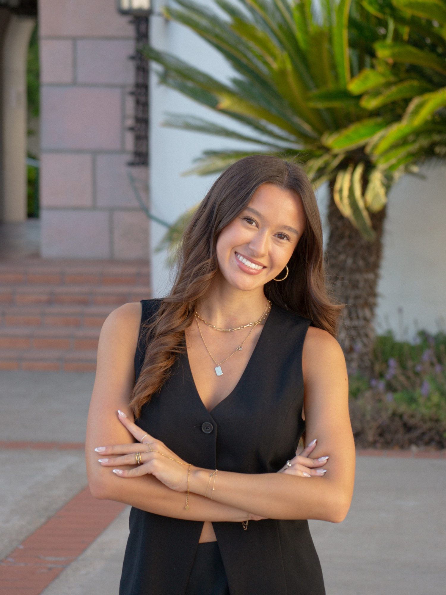
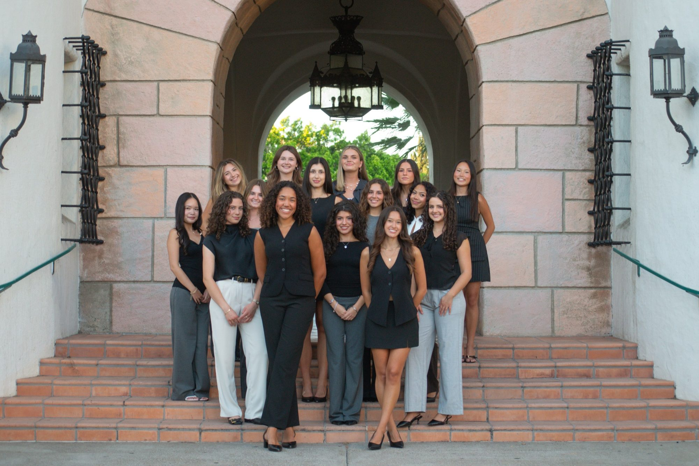
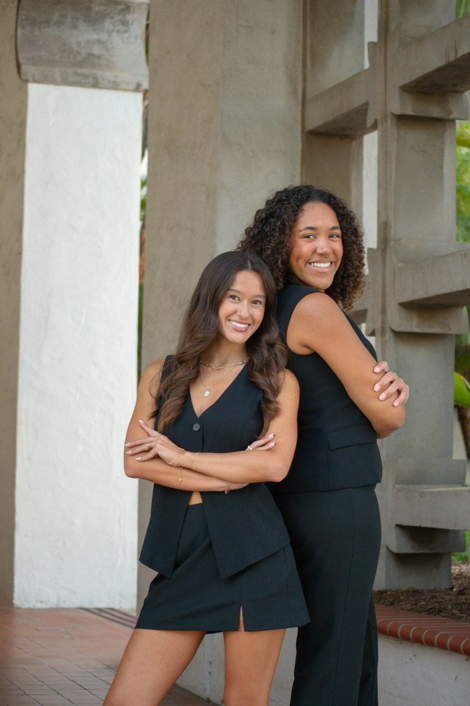
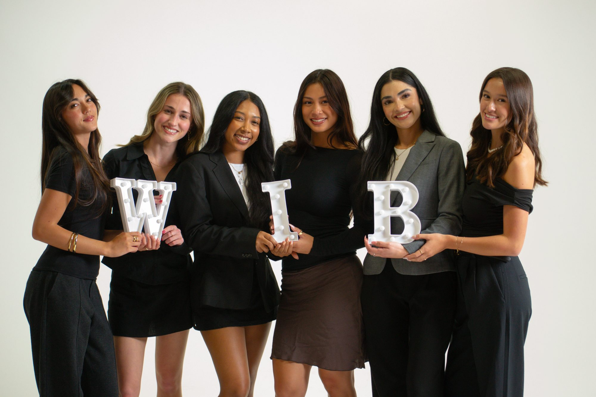

Marketing Intern · Content Director · Co-President
I joined SDSU Women in Business as a marketing intern in August 2024. Since then I've led content for our TikTok as Content Director, and in April 2026 I was elected Co-President of our 1,200+ member chapter.
01
April 2026 – Present
Elected in April 2026 to lead WIB for the 2026–27 term alongside my co-president.

Preparing our members for careers in business while protecting what makes WIB feel like a community.


02
May 2025 – April 2026
Promoted to run WIB's TikTok for the 2025–26 school year. I owned our short-form video strategy end to end, from concepting and filming to editing, posting, and tracking what actually landed.
03
Aug 2024 – May 2025
My first role in WIB. I was the hands behind our outreach, designing Instagram graphics for upcoming events, building collaborations with other SDSU clubs, and recruiting guest speakers to bring real industry voices into our meetings.
